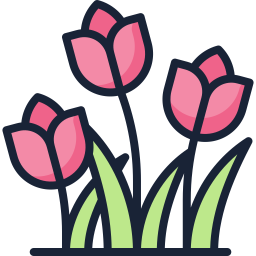

Buenas noches, mi preciosa,
sé que no siempre lo digo,
pero sabes que estoy aquí,
orgulloso de ti,
feliz de ternerte.
Eres lo mejor que me pasó,
lo mejor que poseo,
y si me dejas,
me quedaré.
Hoy, mañana,
cuando todo sea difícil,
cuando el mundo pese más.
Mis brazos estarán abiertos,
siempre habrá un lugar para ti.
Así que duerme tranquila,
mi preciosa, mi gran amor,
y sueña bonito,
yo seguiré aquí, queriendote
Otro día más.
